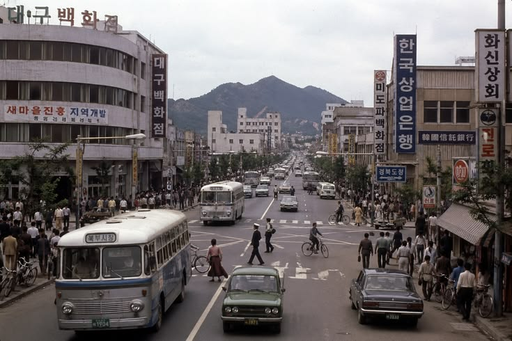
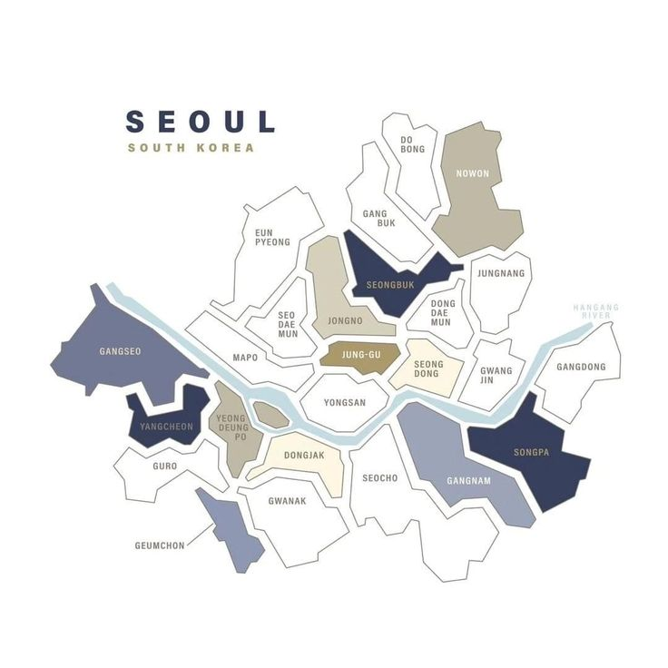
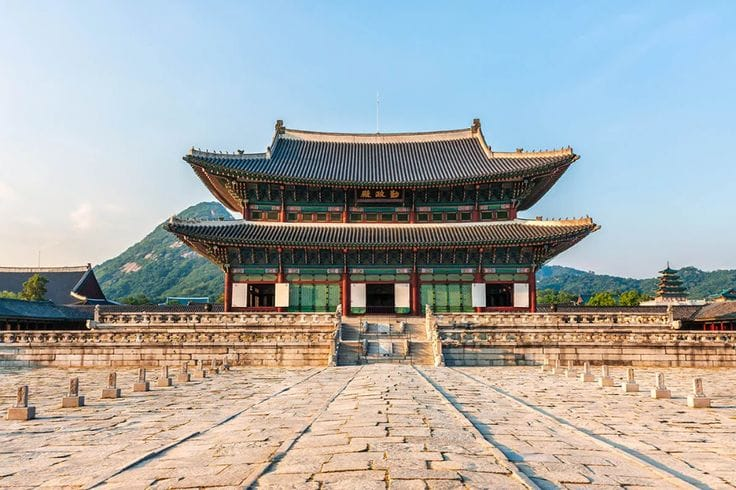
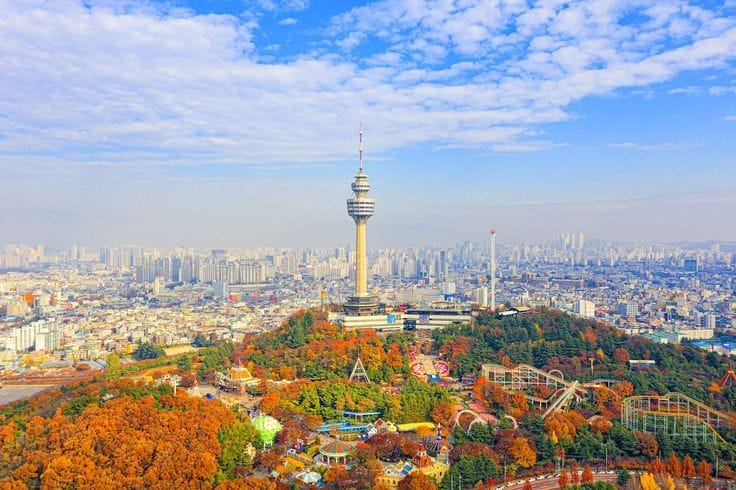
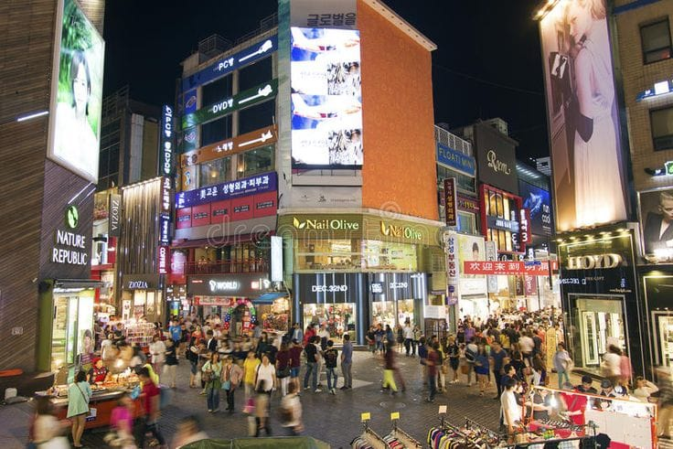

Sejarah

Sejarah Seoul bermula sejak tahun 18 SM ketika kerajaan Baekje mendirikan ibu kotanya, Wiryeseong, di kawasan yang kini menjadi bagian selatan kota.
Berada di posisi strategis sepanjang Sungai Han, wilayah ini terus diperebutkan oleh Tiga Kerajaan Korea hingga akhirnya berkembang pesat pada era Dinasti Joseon.
Pada tahun 1394, Raja Taejo secara resmi menjadikan kota ini yang saat itu dinamai Hanyang sebagai ibu kota negara, lengkap dengan pembangunan Tembok Benteng Seoul
serta istana-istana megah seperti Gyeongbokgung.
Pada abad ke-20, kota ini mengalami guncangan hebat akibat penjajahan Jepang yang mengubah namanya menjadi Gyeongseong, disusul oleh kehancuran parah akibat Perang Korea pada tahun 1950-an.
Namun, pascaperang, Seoul bangkit melalui keajaiban ekonomi yang dikenal sebagai Miracle on the Han River, mengubah kota yang hancur menjadi metropolitan modern yang maju pesat.
Kini, Seoul berkembang sebagai pusat teknologi, budaya, dan ekonomi global tanpa mengabaikan warisan sejarah kerajaannya.
Geografis

Seoul terletak di bagian barat tengah Semenanjung Korea dengan luas wilayah sekitar 605 kilometer persegi yang terbelah oleh aliran Sungai Han.
Secara topografi, kota ini dikelilingi oleh benteng alami berupa perbukitan dan pegunungan granit, seperti Gunung Bukhansan di utara, Gunung Namsan di pusat kota,
serta Gunung Gwanaksan di selatan. Keberadaan Sungai Han membagi Seoul menjadi dua wilayah utama,
yaitu Gangbuk di sebelah utara yang kaya akan situs bersejarah dan Gangnam di sebelah selatan yang berkembang sebagai pusat bisnis dan modernisasi.
Dari segi iklim dan posisi geopolitik, Seoul beriklim kontinental lembap dengan empat musim yang sangat kontras, mulai dari musim panas yang panas dan lembap hingga musim dingin yang sangat dingin dan kering.
Letak geografisnya berada sekitar 50 kilometer di sebelah selatan Zona Demiliterisasi (DMZ) yang membatasi Korea Selatan dan Korea Utara.
Berada di cekungan sungai yang subur serta terlindung oleh pegunungan di sekelilingnya menjadikan tata letak geografis Seoul sangat strategis
sejak zaman dahulu sebagai pusat permukiman, jalur perdagangan, hingga ibu kota negara.
Wisata
Seoul menawarkan perpaduan unik antara situs bersejarah peninggalan era kerajaan dan gaya hidup modern kontemporer.
Di wilayah utara Sungai Han (Gangbuk), Anda bisa menjelajahi istana megah era Dinasti Joseon seperti Istana Gyeongbokgung dan kawasan rumah tradisional Bukchon Hanok Village.
Sementara di wilayah selatan (Gangnam) serta area perkotaan modern, wisatawan disuguhkan pusat perbelanjaan, hiburan pop (K-Pop/K-Drama), dan pemandangan kota dari ketinggian seperti di N Seoul Tower.
Istana Gyeongbokgung

Istana terbesar dan paling megah peninggalan Dinasti Joseon yang dibangun pada tahun 1395.
Tempat ini populer karena arsitektur klasiknya yang megah,
tradisi upacara pergantian pengawal istana,
serta pengalaman berfoto mengenakan pakaian tradisional Korea (hanbok).
Namsan Tower

Menara ikonik yang terletak di puncak Gunung Namsan,
menawarkan pemandangan panorama panorama kota Seoul 360 derajat.
Destinasi ini terkenal dengan spot romantis "gembok cinta" (love locks)
dan pemandangan lampu kota yang indah di malam hari.
Myeongdong Street

Pusat perbelanjaan dan surga kuliner jalanan (street food) paling hits di Seoul.
Di sini wisatawan bisa berburu produk perawatan kulit/kosmetik Korea favorit, fashion terkini,
serta menikmati aneka jajanan khas seperti tteokbokki, egg bread, dan sate ayam dakkochi.